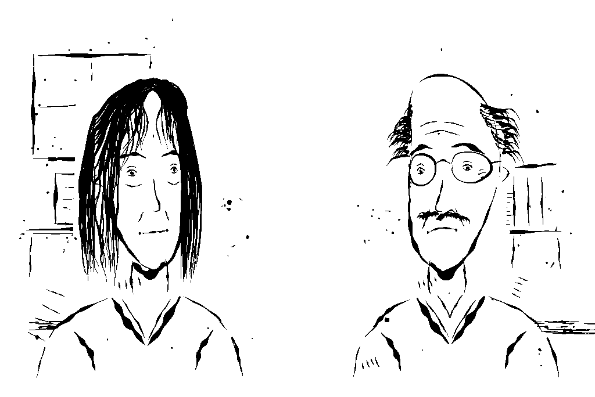

Das Netzwerk als Visual Novel
August 20, 2026

Ich habe eine Visual Novel in Decker programmiert. Ich hätte sie nicht bei der Decker Visual Novel Jam vom Mai einreichen dürfen. Dafür habe ich zu viel KI bei der Erstellung genutzt. Ich bin trotzdem ganz happy mit dem Ergebnis. Ich wollte das Format immer mal ausprobieren, wollte immer mal ein größeres Decker-Programm schreiben und vor allem möchte ich den Stoff meiner Novelle vom Februar weiter verarbeiten und verbreiten.
Weil ich leider völlig talentlos beim Zeichnen bin, war meine größte Sorge anfangs, dass ich keine ordentlichen Figuren hinbekommen würde. Meine Inspiration waren Tuschezeichnungen in der Art, wie sie Erich Hölle zur Illustration der Urmelbücher angefertigt hatte. Nach einigem Rumexperimentieren mit Claude finde ich aber, dass ich sechs ganz passable Charaktere hinbekommen habe.
Die Geschichte ist nicht sonderlich aufregend. Die sechs Helden machen sich Anfang 2026 auf, ein Netzwerk unabhängiger Journalismus-Hubs zu bauen und zu starten, um nach der Bundestagswahl 2029 und den absehbaren Einschneidungen weiter unabhängigen Journalismus machen zu können. Sie nutzen dafür ihre bestehenden Kontakte und existierende Technologien wie das Fediverse. Während der Arbeit am Projekt machen sie einiges an Soul Searching durch. Ich hoffe, die Geschichte wird dadurch nicht zu langatmig.
Die Geschichte ist auf itch.io im Browser spielbar. Die Quellen liegen auf Github. Ich habe neben dem eigentlichen Spiel auch ein Handbuch verfasst. Darin wird das Spiel und der Herstellungsprozess im Detail erklärt.
Viel Spaß!
Comments
Reply on Mastodon